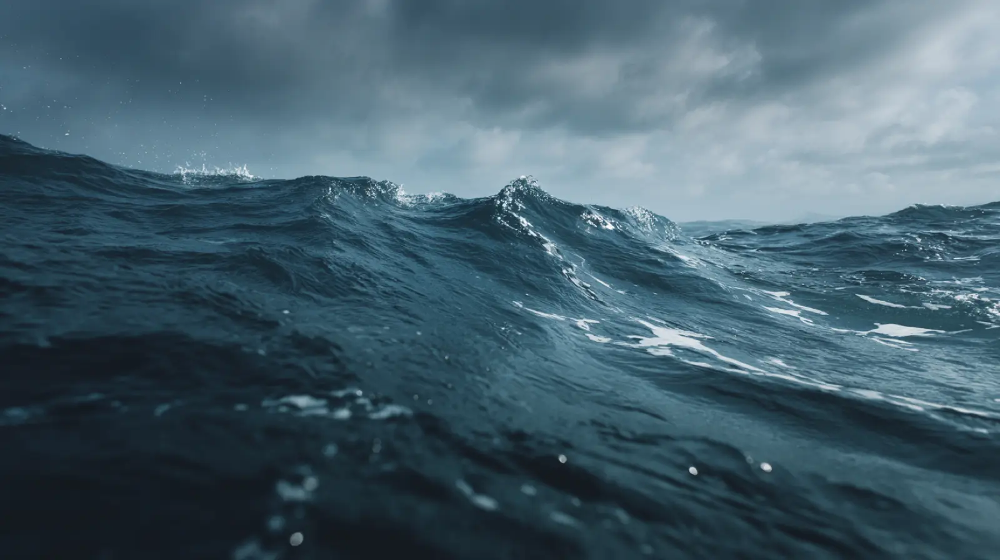
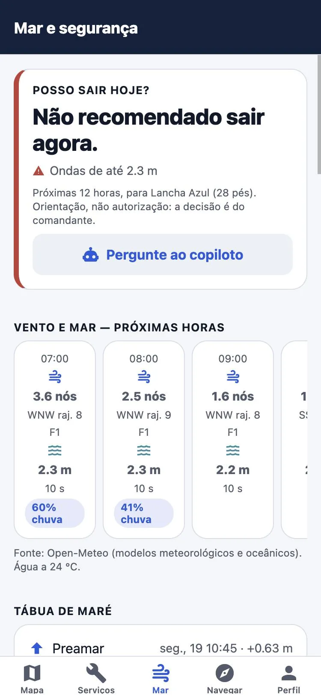
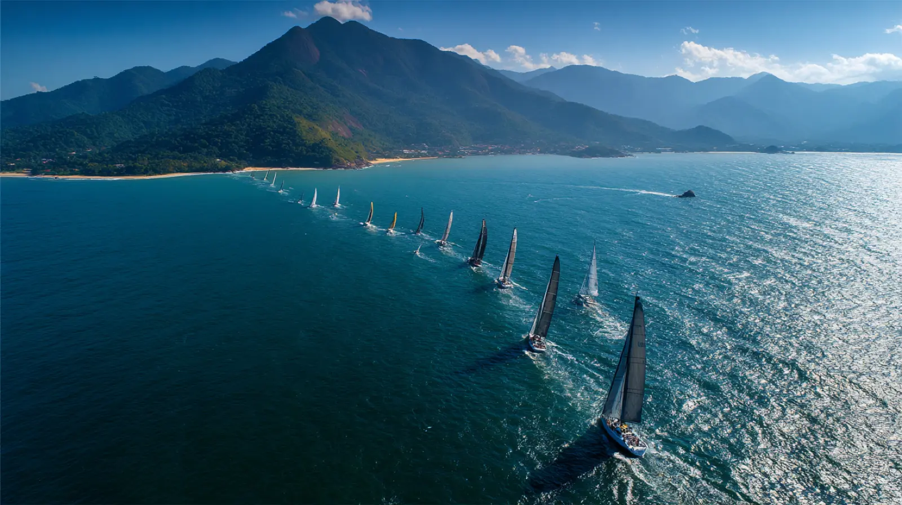
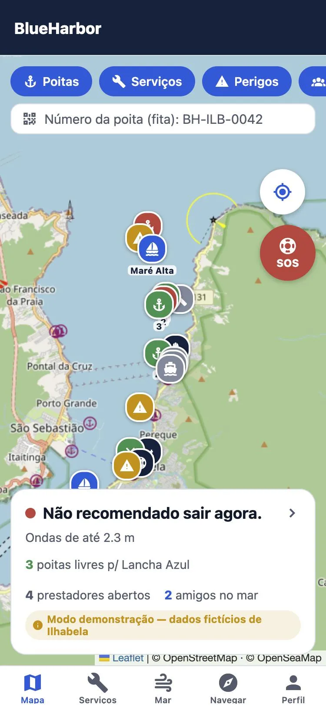
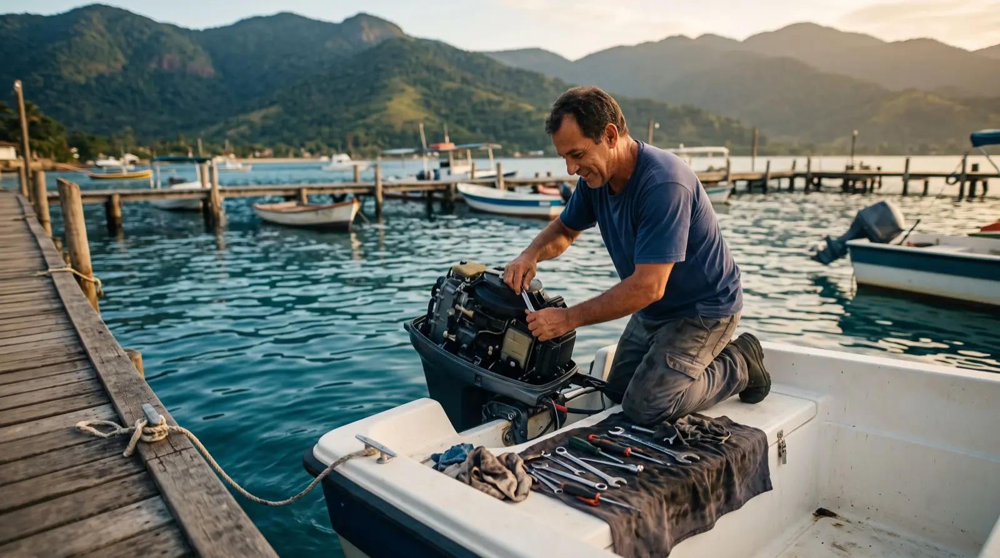
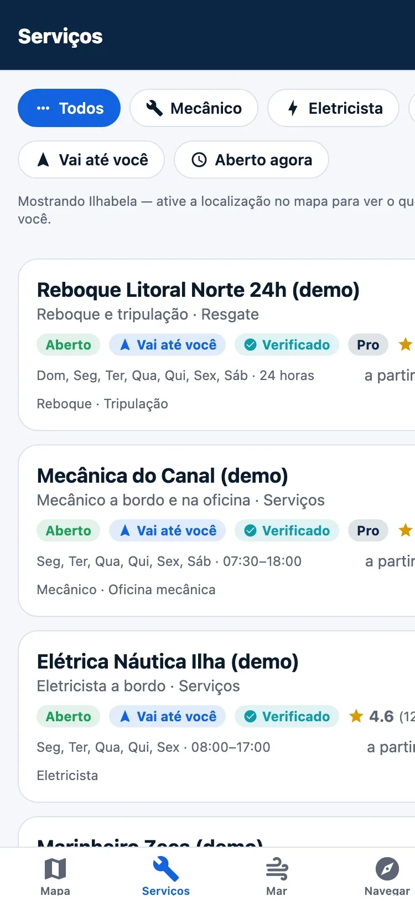
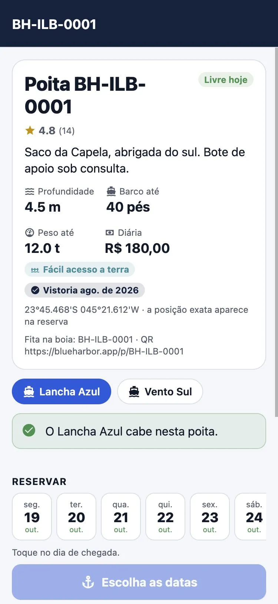
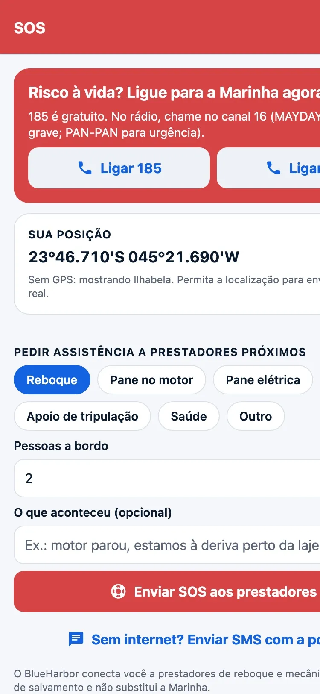
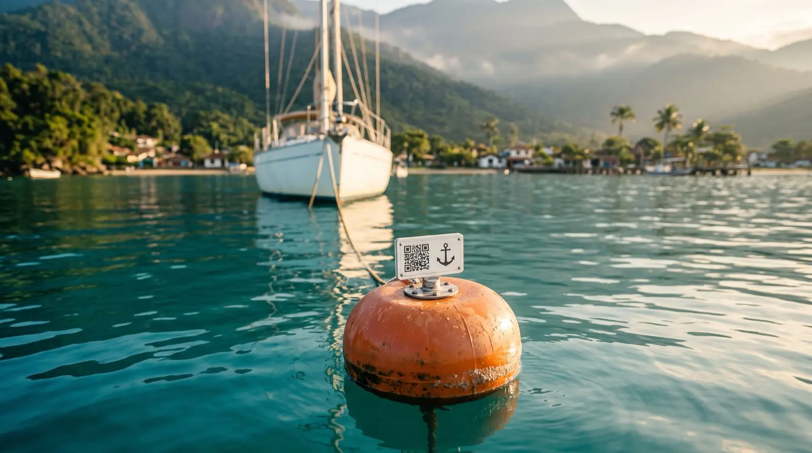

Consultando a previsão…
- Vento
- —
- Rajadas
- —
- Ondas
- —
- Água
- —
23°46′S · 45°21′W · Ilhabela, SP
Saiba se dá para sair hoje, navegue com alarme de âncora, chame mecânico ou reboque e reserve uma poita para a noite. Tudo num app feito por quem vive o mar.
Posso sair hoje? · Ilhabela agoraConsultando o mar…módulos num appsegurança, navegação, serviços e poitas
a um toqueMarinha sempre visível, até sem sinal
de previsão realvento, ondas, maré e pressão
calotepagamento retido até o serviço ser feito
Posso sair hoje?
A mesma leitura que o app faz antes de você soltar a amarra: vento, rajadas, ondas e pressão das próximas 12 horas, ajustados ao tamanho do seu barco.
Orientação, não autorização: a decisão é sempre do comandante.
Um app, o mar inteiro
Hoje isso está espalhado em quatro sites, três grupos de WhatsApp e um telefone que ninguém atende no domingo. No BlueHarbor fica tudo no mesmo lugar.


Vento, ondas, maré e barômetro para o ponto onde o barco está, com um veredito claro. Avisos aos Navegantes resumidos e perigos relatados por quem está na água: pedra, rede de pesca, mar ruim.


Mapa náutico, rotas com distância e hora de chegada, amigos no mapa com privacidade e um alarme de âncora que toca se o barco garrar, mesmo com a tela apagada.


Mecânico e eletricista a bordo, reboque, limpeza, marinheiro. Veja quem vai até você, quem está aberto agora e a nota de outros navegantes. O pagamento fica retido até o serviço ser feito.

Livres em verde, ocupadas em vermelho, e só as que cabem no seu barco (pés, calado e peso). Reserve a noite e pague no app. Só entram poitas com documento e vistoria em dia.

Ligue 185 ou 193 com um toque. Para pane ou reboque, o pedido vai com a sua posição para os prestadores mais próximos, que veem no mapa onde você está.
Diário de bordo · temporada 2026/27
O BlueHarbor nasce em Ilhabela, com um capitão que mora na ilha. Antes do verão, mapeamos prestadores, marinas e poitas um por um, e cadastramos cada um com ele. Só depois abrimos a próxima região do litoral norte.

Poitas com placa QR
Cada poita cadastrada ganha uma placa com QR code. Do bote mesmo você vê se ela está livre, se o seu barco cabe e reserva a noite.
Ou digite o número da fita na boia.
Tamanho, calado e peso do seu barco contra os da poita.
Diária no app, com cancelamento grátis até 48 h antes.
Para quem trabalha no mar
Estamos cadastrando os primeiros parceiros de Ilhabela antes da temporada de verão. O cadastro é assistido: a gente monta o seu perfil, você só confirma.
Comece agora
Esta é a versão de demonstração: prestadores e poitas são fictícios, mas a previsão do mar é real. Teste tudo antes da temporada.
APK · versão 0.1.24 · 123 MB · Android 7+
A versão da Google Play chega com o beta aberto.
TestFlight no beta fechado · App Store depois
Quer entrar no beta do iPhone? Fale com a gente.
Computador, tablet ou celular · nada para instalar
Dúvidas
Não para usar. Previsão, mapa, SOS e busca de serviços são grátis. Você só paga quando contrata um serviço ou reserva uma poita, e o valor é combinado antes.
Não. Em risco à vida, ligue 185 (Marinha) ou chame no canal 16 do VHF. O app mostra esses contatos o tempo todo, até sem internet. O pedido de assistência do BlueHarbor serve para pane, reboque e apoio, e chama prestadores próximos.
Os contatos de emergência e as informações já carregadas continuam disponíveis offline. O alarme de âncora usa o GPS do celular e não precisa de internet. Previsão nova, pedidos e reservas precisam de conexão.
Esta é a versão de demonstração para a temporada 2026/27. Os dados de Ilhabela são fictícios para você testar tudo, inclusive reserva e pagamento simulados. A previsão do mar é real, do Open-Meteo.
Você escolhe: amigos, todos ou ninguém. O alarme de âncora usa a posição em segundo plano só enquanto está ligado. Você pode apagar a conta pelo próprio app.
Primeiro Ilhabela. Depois São Sebastião, Caraguatatuba e Ubatuba, no litoral norte de São Paulo. Só abrimos uma região quando ela já tem prestadores e poitas suficientes para atender bem.
Quer ser parceiro em Ilhabela, entrar no beta do iPhone ou levar o BlueHarbor para a sua marina? Fale com a gente.